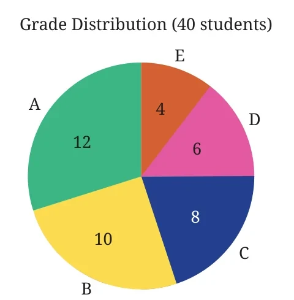
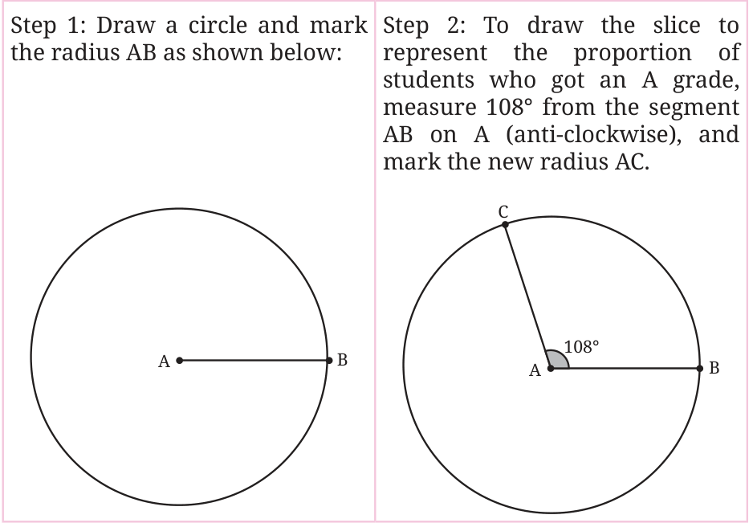
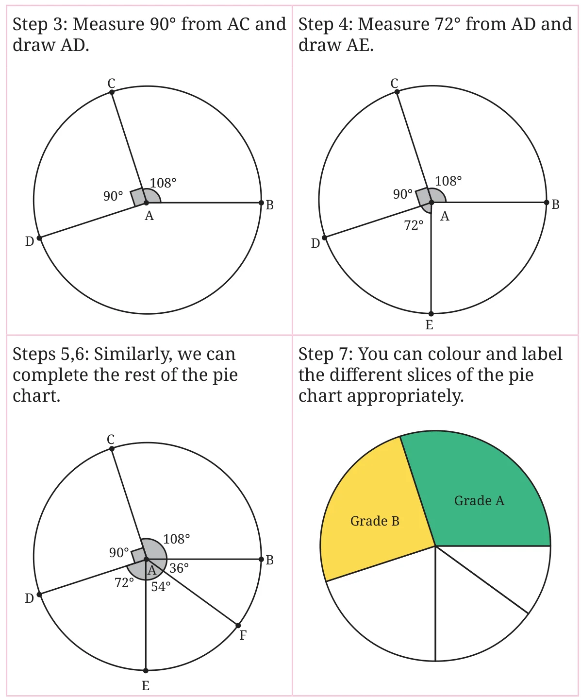

3.5 A Slice of the Pie

Have you seen pie charts like the one shown in the figure? Pie charts show different proportions of a whole. This one shows the proportions of students that have scored each grade in an assessment. These kinds of visualisations help us quickly interpret data.
Let us try to create this pie chart. Here is a table showing the grades scored by students:
| Grade | A | B | C | D | E |
|---|---|---|---|---|---|
| Students | 12 | 10 | 8 | 6 | 4 |
How do we mark the different slices of the pie chart?
To mark a slice in the pie chart, the angle corresponding to a grade should be proportional to the number of students who have scored that grade. The total angle in a circle is \(360^{\circ}\). So, we need to divide 360 in the ratio of \(12 : 10 : 8 : 6 : 4\).
Can we reduce this ratio to its simplest form?
We can use the same procedure we used to reduce a ratio with two terms to its simplest form. We divide all the terms by their HCF to get the simplest form.
In this example, 2 is the HCF of the terms. We get the simplest form by dividing all the terms by 2. The ratio becomes \(6 : 5 : 4 : 3 : 2\).
So, the angles are:
\(\text{Grade A} = \frac{6}{(6 + 5 + 4 + 3 + 2)} \times 360^{\circ} = \frac{6}{20} \times 360^{\circ} = 6 \times 18 = 108^{\circ}.\)
\(\text{Grade B} = \frac{5}{(6 + 5 + 4 + 3 + 2)} \times 360^{\circ} = 5 \times 18 = 90^{\circ}.\)
\(\text{Grade C} = 4 \times 18 = 72^{\circ}.\)
\(\text{Grade D} = 3 \times 18 = 54^{\circ}.\)
\(\text{Grade E} = 2 \times 18 = 36^{\circ}.\)
Now let us construct a pie chart using these angles.

